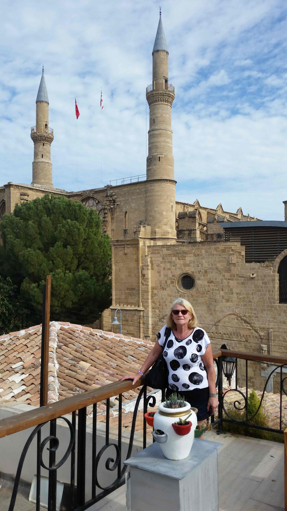

Urlaub in Nord-Zypern, 7.11.-14.11.2016

Burg Hilarion
 Ein im 9./10. Jahrhundert auf dem Berg errichtetes Kloster war nach dem Eremit St. Hilarion, einem Einsiedler aus dem 6. Jahrhundert, der seine letzten Lebensjahre in einer Höhle im Pentadaktylos verbrachte, benannt. Um 1100 wurde es wahrscheinlich in die Festung integriert. Die heute als Ruine vorhandene Kirche ist dem byzantinischen Kloster zuzurechnen und stammt etwa aus dem 10./11. Jahrhundert. Im Auftrag von Richard Löwenherz ([1157-1199, Sohn der 26-fachen Urgroßmutter von Wolfgang Singer], Ritter des 3. Kreuzzuges und König von England. Heinrich VI., Sohn von Friedrich Barbarossa lies ihn im Jahr 1193 im Trifels einsperren. Die Freilassung kostete die englische Krone 23 Tonnen Silber.) belagerte Guido von Lusignan 1191 die als uneinnehmbar angesehene Burg, um sie danach auf Anweisung des Statthalters Isaak Komemnos an die Franken zu übergeben. Die Tochter Isaaks wurde daraufhin von Guido von Lusignan auf der Burg gefangengehalten.
St. Hilarion wurde dreißig Jahre später in die Auseinandersetzungen mit dem deutschen Kaiser Friedrich II. hineingezogen: Johann von Ibelin, der Vormund des minderjährigen fränkisch-zyprischen Königs Henri I., ließ die Burg ausbauen. Da er feindliche Akte durch Kaiser Friedrich II. befürchtete, brachte er 1228 seine Familie in die Burg. Friedrich erreichte, gestützt auf sein Kreuzfahrerheer, die Übergabe der Burg, doch nach Beendigung des Kreuzzuges belagerte Johann von Ibelin die Burg, die nach dem Ausgehen der Nahrungsvorräte kapitulierte.
Nach 1232 bauten die Lusignans die Burg zu ihrer Sommerresidenz aus und sie erhielt den Namen „Dieu d´Amour“ – abgeleitet vom griechischen „Didymoi“ (Zwillinge) – bezugnehmend auf die beiden Gipfel der Oberburg. An strategischen Punkten errichtete man neue Türme, die sich durch die Verwendung von größeren Quadern, insbesondere an den Ecken, auszeichnen.
Die Burg spielte auch bei der genuesischen Invasion Zyperns 1373 mit der Belagerung von Kyrenia durch die Genuesen eine wichtige Rolle, Peter I. verteidigte die Burg. Nach dem Tod von Peter I. 1369 kam dessen Sohn Peter II. an die Macht, dieser wurde jedoch vom Adel nicht anerkannt. Dessen Onkel Johannes von Antiochia sollte nun König werden. Eleonore von Aragon, die Witwe Peter I. bekämpfte mit ihrem Gefolge Johannes und zwang ihn damit zum Rückzug in die Burg St. Hilarion. Dort stürzte er angeblich aus Angst vor Verrat 300 seiner bulgarischen Leibwachen vom Felsen in den Tod, er selbst wurde 1374 auf Veranlassung Eleonores ermordet.
Um 1391 wurde die Festung ein letztes Mal ausgebaut, wie viele andere Burgen Zyperns aber Anfang des 16. Jahrhunderts von den Venezianern geschleift.
Ein im 9./10. Jahrhundert auf dem Berg errichtetes Kloster war nach dem Eremit St. Hilarion, einem Einsiedler aus dem 6. Jahrhundert, der seine letzten Lebensjahre in einer Höhle im Pentadaktylos verbrachte, benannt. Um 1100 wurde es wahrscheinlich in die Festung integriert. Die heute als Ruine vorhandene Kirche ist dem byzantinischen Kloster zuzurechnen und stammt etwa aus dem 10./11. Jahrhundert. Im Auftrag von Richard Löwenherz ([1157-1199, Sohn der 26-fachen Urgroßmutter von Wolfgang Singer], Ritter des 3. Kreuzzuges und König von England. Heinrich VI., Sohn von Friedrich Barbarossa lies ihn im Jahr 1193 im Trifels einsperren. Die Freilassung kostete die englische Krone 23 Tonnen Silber.) belagerte Guido von Lusignan 1191 die als uneinnehmbar angesehene Burg, um sie danach auf Anweisung des Statthalters Isaak Komemnos an die Franken zu übergeben. Die Tochter Isaaks wurde daraufhin von Guido von Lusignan auf der Burg gefangengehalten.
St. Hilarion wurde dreißig Jahre später in die Auseinandersetzungen mit dem deutschen Kaiser Friedrich II. hineingezogen: Johann von Ibelin, der Vormund des minderjährigen fränkisch-zyprischen Königs Henri I., ließ die Burg ausbauen. Da er feindliche Akte durch Kaiser Friedrich II. befürchtete, brachte er 1228 seine Familie in die Burg. Friedrich erreichte, gestützt auf sein Kreuzfahrerheer, die Übergabe der Burg, doch nach Beendigung des Kreuzzuges belagerte Johann von Ibelin die Burg, die nach dem Ausgehen der Nahrungsvorräte kapitulierte.
Nach 1232 bauten die Lusignans die Burg zu ihrer Sommerresidenz aus und sie erhielt den Namen „Dieu d´Amour“ – abgeleitet vom griechischen „Didymoi“ (Zwillinge) – bezugnehmend auf die beiden Gipfel der Oberburg. An strategischen Punkten errichtete man neue Türme, die sich durch die Verwendung von größeren Quadern, insbesondere an den Ecken, auszeichnen.
Die Burg spielte auch bei der genuesischen Invasion Zyperns 1373 mit der Belagerung von Kyrenia durch die Genuesen eine wichtige Rolle, Peter I. verteidigte die Burg. Nach dem Tod von Peter I. 1369 kam dessen Sohn Peter II. an die Macht, dieser wurde jedoch vom Adel nicht anerkannt. Dessen Onkel Johannes von Antiochia sollte nun König werden. Eleonore von Aragon, die Witwe Peter I. bekämpfte mit ihrem Gefolge Johannes und zwang ihn damit zum Rückzug in die Burg St. Hilarion. Dort stürzte er angeblich aus Angst vor Verrat 300 seiner bulgarischen Leibwachen vom Felsen in den Tod, er selbst wurde 1374 auf Veranlassung Eleonores ermordet.
Um 1391 wurde die Festung ein letztes Mal ausgebaut, wie viele andere Burgen Zyperns aber Anfang des 16. Jahrhunderts von den Venezianern geschleift.
Staudamm Gecitköy

 Vom Festland der Türkei wurde im Meer eine 70 km lange Süßwasserleitung gelegt bis nach Nord-Zypern und in das Becken gepumt um die Wasserversorgung für Haushalte und die Landwirtschaft zu gewährleisten.
Vom Festland der Türkei wurde im Meer eine 70 km lange Süßwasserleitung gelegt bis nach Nord-Zypern und in das Becken gepumt um die Wasserversorgung für Haushalte und die Landwirtschaft zu gewährleisten.


